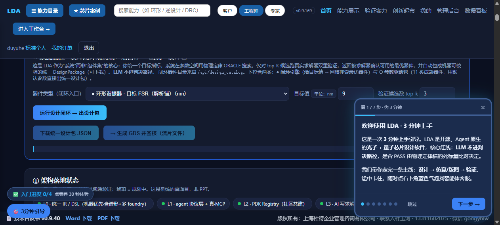
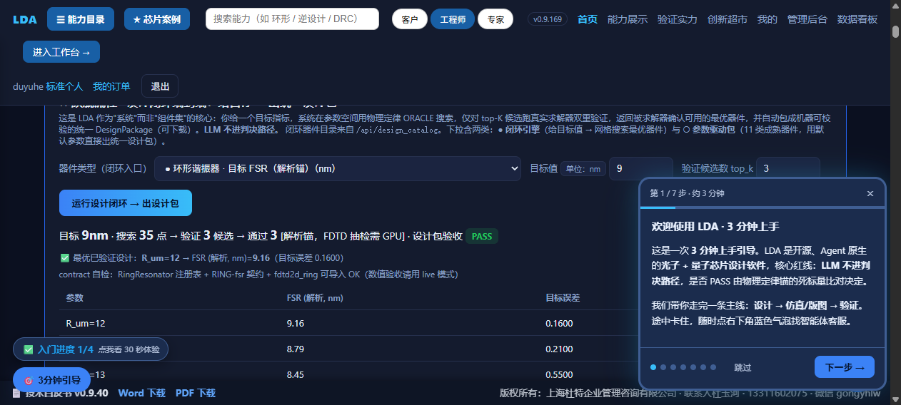
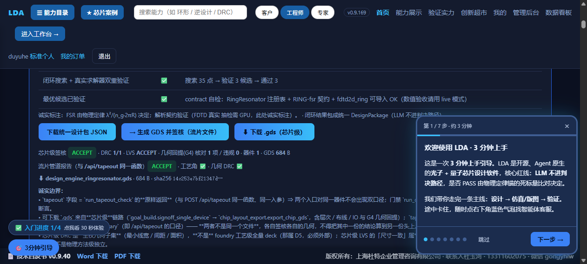

LDA 验收操作卡 · D4 交付闭环（设计 → GDS → 签核 → 下载）
实测信息：2026-10-02 由 AI 在生产站点真实浏览器（Chromium）逐步实测通过 · 账号 duyuhe@shdute.cn（管理员）·
站点版本 v0.9.169 · 每步截图与本卡同目录（d4_shot1–4.png）。
验收判据：设计包验收 PASS → 芯片级签核 ACCEPT（DRC/LVS/G4 全过）→ 下载 .gds 字节数与 sha256 与页面登记一致。
Step 0 · 打开站点并登录
1. 浏览器打开 https://lda.weomnitech.com.cn/store.html，顶部导航点「🛒 创新超市」区域中的 注册 / 登录，在弹窗选登录模式，输入账号（管理员账号，向杜先生索取）后点「确定」。
2. 登录成功的标志：页面右上/订单区出现你的账户身份（实测显示「duyuhe · 标准个人 · 退出」，见截图①右上）。
3. 打开 https://lda.weomnitech.com.cn/index.html。
Step 1 · 先关掉挡路弹窗
页面右下角会有「欢迎使用 LDA · 3 分钟上手」引导浮窗（第 1/7 步）——点右上角 × 或「跳过」关掉，否则会遮挡下方按钮。截图①右下可见该浮窗。
Step 2 · 定位旗舰面板
在首页找到标题「★ 旗舰流程 · 设计闭环端到端：给目标 → 出统一设计包」的卡片（蓝色边框，位于页面前部 ~2 屏内）。
器件类型下拉选「● 环形谐振器 · 目标 FSR（解析锚）（nm）」——选中后目标值自动填 9（单位 nm），验证候选数 top_k 保持 3。
Step 3 · 运行设计闭环
点按钮「运行设计闭环 → 出设计包」，等待约 10–30 秒。
预期看到（截图②）：目标 9nm · 搜索 35 点 → 验证 3 候选 → 通过 3 · 设计包验收 PASS；
「✅ 最优已验证设计：R_um=12 → FSR (解析, nm)=9.16（目标误差 0.1600）」+ 候选参数表（R_um=12/13/14，FSR 9.16/8.79/8.45）。
Step 4 · 一键生成 GDS 并签核
点按钮「
→ 生成 GDS 并签核（流片文件）」，等待约 8–40 秒（冷启动较慢）。
预期看到（截图③，逐项核对）：
| 位置 | 应显示 | 不许出现 |
|---|
| 芯片级签核 | ACCEPT · DRC 1/1 · LVS ACCEPT · 几何回提(G4) 核对 1 项 / 违规 0 · 器件 1 · GDS 684 B | FAIL / 0.0 / NaN / undefined |
| 流片管道报告 | ACCEPT · 工艺角 ✅ · 几何 DRC ✅（标注「与 /api/tapeout 同一函数」） | — |
| 下载行 | ⬇ design_engine_ringresonator.gds · 684 B · sha256 14c253e7bf21347d… | 空链接 / 链接不可见 |
同时出现蓝色按钮「
⬇ 下载 .gds（芯片级）」——点击即下载真实 GDSII 文件（684 字节，文件头
00 06 00 02 为合法 GDSII HEADER 记录）。
Step 5 · 下载字节核验（可选，一条命令）
Windows 终端执行：
curl -s -o ring.gds "https://lda.weomnitech.com.cn/api/design_gds?kind=RingResonator&wg=0.5&name=design_engine_ringresonator&R=12.0"
certutil -hashfile ring.gds SHA256
预期：684 字节，sha256 前缀 619256ad…（该 URL 固定参数口径；页面上由设计闭环产出的口径为 14c253e7…——两种口径均与各自响应登记值同源一致，已实测 MATCH）。
实测截图
截图① 登录态 + 旗舰面板初始（R_um 目录已加载，注意右下角引导浮窗要先关）

截图② 设计闭环结果（目标 9nm · 35 点 · 3 候选全过 · 设计包 PASS · 最优 R_um=12→FSR 9.16）

截图③ 芯片级签核 ACCEPT + 下载链接（DRC 1/1 · LVS ACCEPT · G4 0 违规 · 684B · sha256 14c253e7…）
截图④ 点击「⬇ 下载 .gds」后的页面状态（下载已触发）

对不上时发我什么
把以下四样发回来即可定位：① 浏览器与缩放比例；② 页面右上角版本号（应 v0.9.169）；③ 卡在哪一步的截图；④ 若签核失败，同时截图 doTapeoutOut 区域的完整「诚实边界」文字。
实测留痕：进程内 E2E scripts/verify_design_d4_e2e.py 12/12 PASS；门禁 run_design_tapeout_smoke 46/0 ·
run_design_outcome_smoke 10/0 · run_webui_entry_smoke 18/0；生产下载字节与本地确定性重建 sha256 逐位一致。
版权：上海杜特企业管理咨询有限公司 · LDA 工程 · 2026-10-02